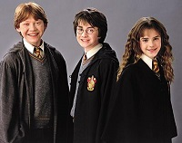

Harijs Poters
Harija Potera grāmatu sērijas autore ir J.K.Roulinga.
Visas grāmatas ir ekranizētas.
Ir arī luga, kura parāda notikumus 19 gadus pēc grāmatām.
 Grāmatās stāstīts par jauno burvi Hariju Poteru un viņa draugiem Ronu Vīzliju un Hermioni Grendžeri, kas mācās Cūkkārpas Raganības un burvestību arodskolā. Pamatsižets veltīts Harija Potera cīņai ar tumšo burvi Lordu Voldemortu, kura mērķos ir iegūt nemirstību un burvju pasaules ieņemšana.